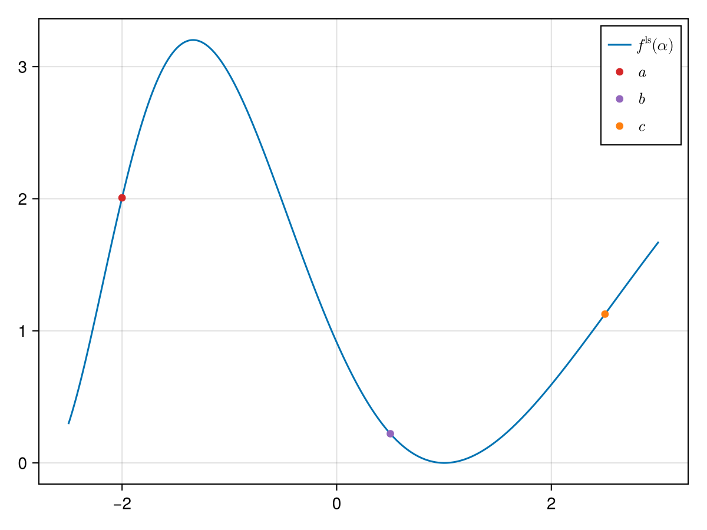
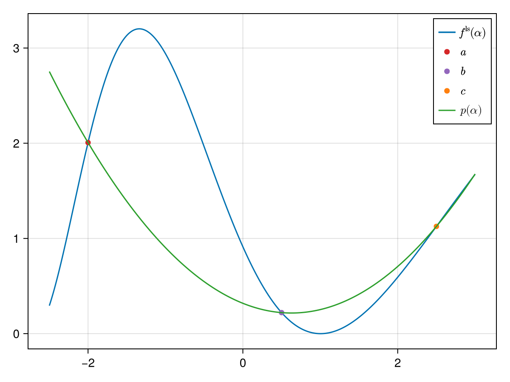
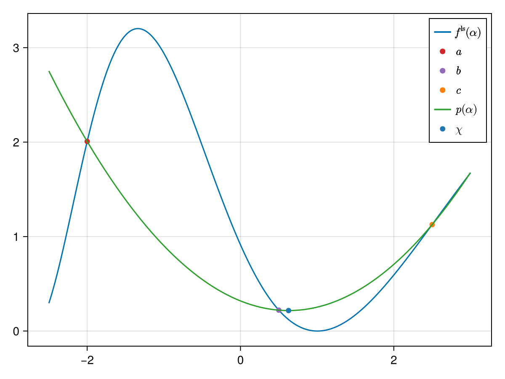
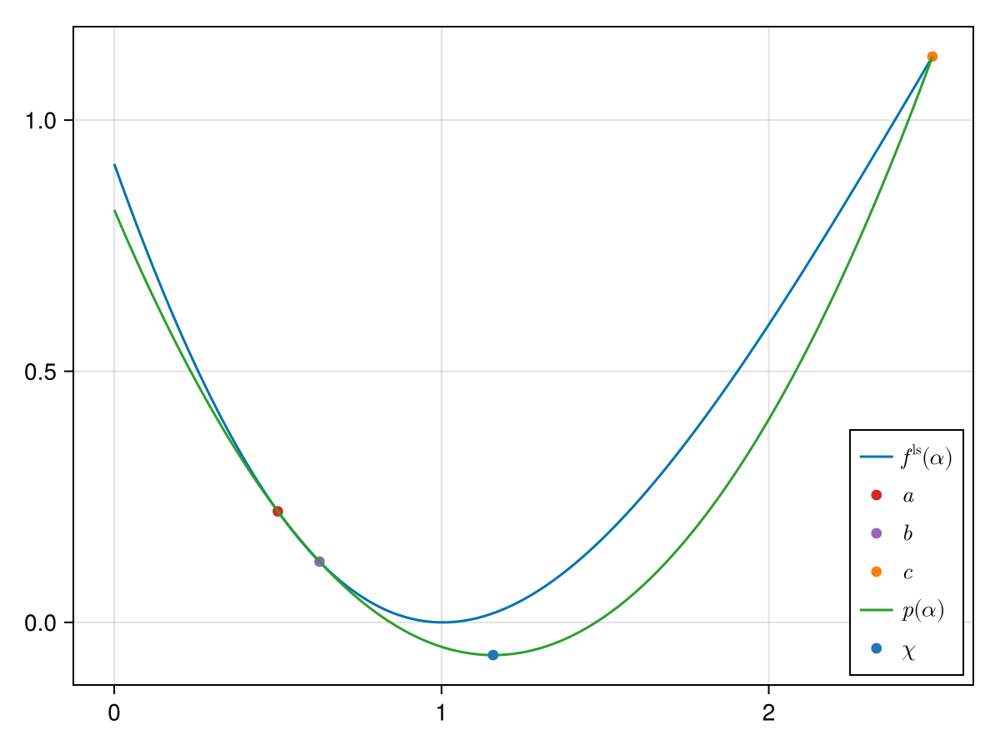
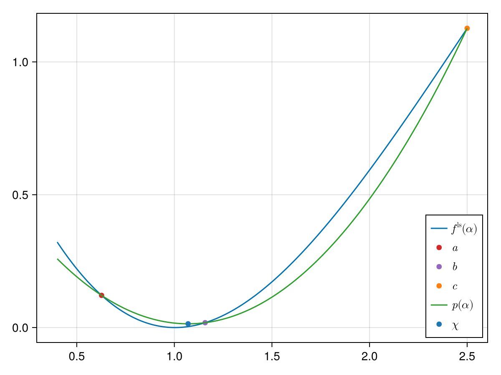
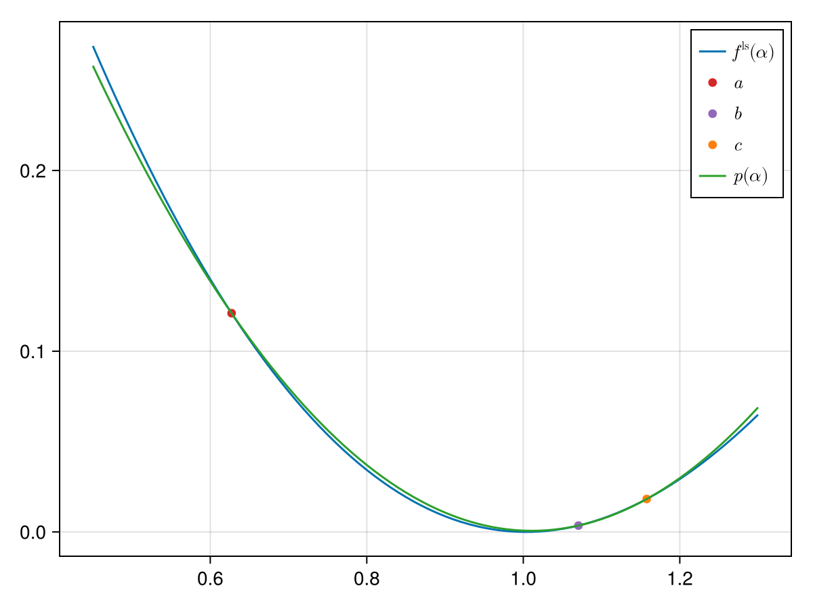

Bierlaire Quadratic Line Search
In [4] quadratic line search is defined as an interpolation between three points. For this consider
using SimpleSolvers
f(x::T) where {T<:Number} = exp(x) * (T(.5) * x ^ 3 - 5x ^ 2 + 2x) + 2one(T)
f(x::AbstractArray{T}) where {T<:Number} = exp.(x) .* (T(.5) * (x .^ 3) - 5 * (x .^ 2) + 2x) .+ 2one(T)
f!(y::AbstractVector{T}, x::AbstractVector{T}) where {T} = y .= f.(x)
F!(y, x, params) = f!(y, x)
x = -10 * rand(1)
solver = NewtonSolver(x, f.(x); F = F!)
params = NullParameters()
state = NonlinearSolverState(x)
update!(state, x, f(x))
direction!(solver, x, params, 0)
ls_obj = linesearch_problem(solver)
params = (x = state.x, parameters = NullParameters())
fˡˢ(alpha) = ls_obj.F(alpha, params)
∂fˡˢ∂α(alpha) = ls_obj.D(alpha, params)The three points are produced by SimpleSolvers.triple_point_finder, which searches rightward only and therefore needs the merit to be decreasing at its start. Unlike bracket_minimum — used by Quadratic and Bisection — it cannot recover by flipping direction. BierlaireQuadratic therefore validates the $\alpha = 0$ anchor up front with SimpleSolvers.check_anchor: an ascending or non-finite anchor is reported (as LINESEARCH_NO_DESCENT) and the caller's step returned, rather than handed to a bracketer that cannot succeed. An ascending anchor is not exotic — it is what a stale Jacobian produces under refactorize > 1. See the contract on LinesearchMethod.
For the Bierlaire quadratic line search we need three points: $a$, $b$ and $c$:
a, b, c = -2., 0.5, 2.5

In the figure above we already plotted three points $a$, $b$ and $c$ on whose basis a second-order polynomial will be built that should approximate $f^\mathrm{ls}$.[1] The polynomial is built with the ansatz:
\[p(\alpha) = \beta_1(\alpha - a)(x - b) + \beta_2(\alpha - a) + \beta_3(\alpha - b),\]
and by identifying
\[\begin{aligned} p(a) & = f^\mathrm{ls}(a), \\ p(b) & = f^\mathrm{ls}(b), \\ p(c) & = f^\mathrm{ls}(c), \\ \end{aligned}\]
we get
\[\begin{aligned} \beta_1 & = \frac{(b - c)f^\mathrm{ls}(a) + (c - a)f^\mathrm{ls}(b) + (a - b)f^\mathrm{ls}(c)}{(a - b)(c - a)(c - b)}, \\ \beta_2 & = \frac{f^\mathrm{ls}(b)}{b - a}, \\ \beta_3 & = \frac{f^\mathrm{ls}(a)}{a - b}. \end{aligned}\]
We can plot this polynomial:


We can now easily determine the minimum of the polynomial $p$. It is:
\[\chi = \frac{1}{2} \frac{ f^\mathrm{ls}(a) (b^2 - c^2) + f^\mathrm{ls}(b) (c^2 - a^2) + f^\mathrm{ls}(c) (a^2 - b^2) }{f^\mathrm{ls}(a) (b - c) + f^\mathrm{ls}(b) (c - a) + f^\mathrm{ls}(c) (a - b)}.\]


We now use this $\chi$ to either replace $a$, $b$ or $c$ and distinguish between the following four scenarios:
- $\chi > b$ and $f^\mathrm{ls}(\chi) > f^\mathrm{ls}(b)$ $\implies$ we replace $c \gets \chi$,
- $\chi > b$ and $f^\mathrm{ls}(\chi) \leq f^\mathrm{ls}(b)$ $\implies$ we replace $a, b \gets b, \chi$,
- $\chi \leq b$ and $f^\mathrm{ls}(\chi) > f^\mathrm{ls}(b)$ $\implies$ we replace $a \gets \chi$,
- $\chi \leq b$ and $f^\mathrm{ls}(\chi) \leq f^\mathrm{ls}(b)$ $\implies$ we replace $b, c \gets \chi, b$.
In our example we have the second case: $\chi$ is to the right of $b$ and $f^\mathrm{ls}(\chi)$ is smaller than $f(b)$. We therefore replace $a$ with $b$ and $b$ with $\chi$. The new approximation is the following one:


We again observe the second case. By replacing $a, b \gets b, \chi$ we get:


We now observe the first case: $\chi$ is to the left of $b$ and $f^\mathrm{ls}(\chi)$ is above $f(b)$. Hence we replace $b, c \gets \chi, b.$ A successive iteration yields:


After having computed $\chi$ we further either shift it to the left or right depending on whether $(c - b)$ or $(b - a)$ is bigger respectively. The shift is made by either adding or subtracting the constant $\varepsilon$.
That shift alone does not guarantee progress. If $\chi$ coincides with a bracket point the triple update cannot narrow $[a, c]$: for $\chi = b$ both branch tests are false (it is the same point, so the merit values are identical), the bracket collapses to $c = b$, the next fit is degenerate, and the bisection fallback plus the shift map straight back onto $b$ — an iteration that never contracts and so never satisfies the termination test. The implementation therefore bisects the wider sub-interval whenever $\chi$ lands on $a$, $b$ or $c$, which makes $c - a$ decrease strictly every iteration and bounds the search at $O(\log_2((c-a)/\varepsilon))$ steps regardless of the merit's magnitude.
SimpleSolvers.triple_point_finder doubles its increment until the merit rises, so without a bound the third point — and hence the fitted $\chi$ — can be arbitrarily far out on a merit that is nearly flat or whose minimiser is genuinely distant. The αmax field of BierlaireQuadratic stops it, and a caller with a scale of its own can ask for less; see Bounding the step.
- 1These points further need to satisfy $f^\mathrm{ls}(a) \geq f^\mathrm{ls}(b) < f^\mathrm{ls}(c)$. Note that the left inequality is non-strict: while descending, consecutive samples may tie on a plateau, and for a flat-bottomed merit a strict $f^\mathrm{ls}(a) > f^\mathrm{ls}(b)$ is unattainable. This matches the guarantee documented by
SimpleSolvers.triple_point_finder, which produces the points.